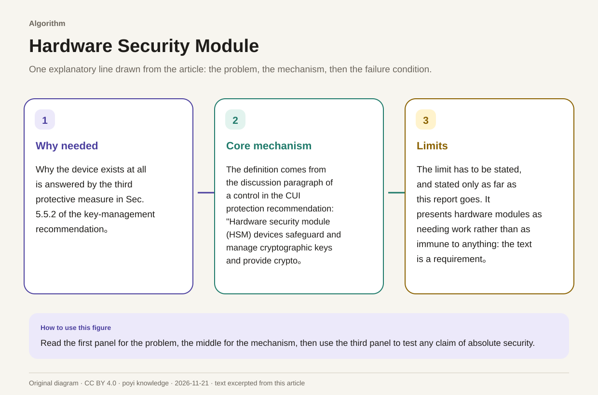
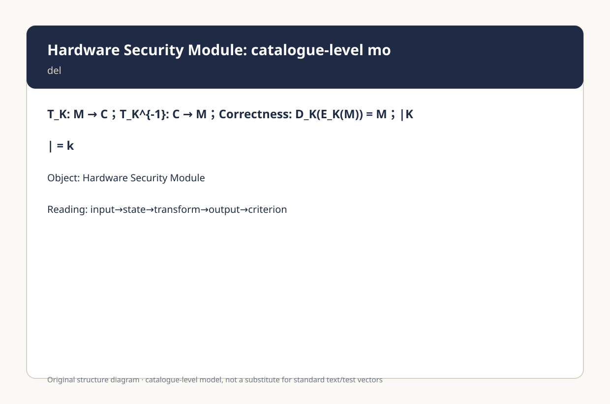

Principles
Algorithm: Hardware Security Module (硬件安全模块). The definition comes from the discussion paragraph of a control in the CUI protection recommendation: "Hardware security module (HSM) devices safeguard and manage cryptographic keys and provide cryptographic processing." The sentence splits the job in two - the device holds and manages keys, and it also does the math - and the same file's acronym table at line 1866 expands HSM to Hardware Security Module, which is what supports the alias. The opening clause of the very next sentence says what is hosted there: "Cryptographic operations (e.g., encryption, decryption, and signature generation and verification) are typically hosted on the HSM device". Where those two spans sit limits what they mean, so the position is given with them: control 03.08.09 is a backup control, its requirement item b. prints "Implement cryptographic mechanisms to prevent the unauthorized disclosure of CUI at backup storage locations", and the discussion opens by making the choice of mechanism depend on keeping backup information confidential. This document mentions the HSM underneath a backup-protection control, not as a general definition of the device class. As far as these spans go, the file says only what such devices do - hold and manage keys, host operations, and in many implementations accelerate them - and says nothing about how a device is built: no command interface, no measured figure, no product name, no vendor name.

Why it matters
Why the device exists at all is answered by the third protective measure in Sec. 5.5.2 of the key-management recommendation, which confines plaintext keys to what the file calls physically protected containers. The sentence that follows is quoted, because it is the one naming the device class: "This includes key generators, key-transport devices, key loaders, cryptographic modules, hardware security modules (HSMs), and key-storage devices". Read as written, the HSM sits in that list as one container type beside cryptographic modules, not above them. Two procedures precede it: line 1701 limits the time a secret key or an asymmetric private key spends in plaintext form, and line 1702 keeps people from seeing such keys while they are still in plaintext. The same file defines the first of those at line 850, as the key that goes with a symmetric algorithm, which is why this entry reads item 1 as being about symmetric keys. Taking the three together, what the device buys is confinement of key visibility inside a hardware boundary - that is how this entry reads the list, not a statement the recommendation makes. Why the first sentence of item 3 is reported instead of quoted: it ends in a word the file itself puts inside quotation marks, and a mark of the same kind as the delimiter would cut the span short, which would misquote the sentence rather than protect it.
Applications
The place and the range come from the post-quantum transition report: "Cryptographic hardware modules, such as hardware security modules (HSMs) and Trusted Platform Modules (TPMs), provide secure environments for performing cryptographic operations and storing sensitive keys." The same section adds that they are "used in various applications, from securing server infrastructure to protecting cryptographic keys on personal devices" - server infrastructure through personal devices.

Limits & attacks
The limit has to be stated, and stated only as far as this report goes. It presents hardware modules as needing work rather than as immune to anything: the text is a requirement, not a guarantee - after the definition and use sentences at lines 444-447 and a blank line, lines 449-450 say such modules "must be upgraded or redesigned to support PQC algorithms, which often have larger key sizes and different computational requirements", and the sentence that follows, which begins on line 450 and ends on line 455, asks for firmware or hardware updates and for modules able to run quantum-resistant operations efficiently. The report describes no way in which such a module is defeated, so this entry offers no defeat methods. Two other sentences are easy to mis-attribute, so they are pinned here, headings quoted as the file prints them: the report mentions side-channel attacks twice and neither mention is about hardware modules. The first, at lines 438-440, sits under "2.2.2. Software Cryptographic Libraries" (heading line 425) and is about updating libraries - "This transition involves adding new algorithms, optimizing their implementations for performance, and ensuring that those implementations are secure against side-channel attacks". The second, at lines 617-619, sits under "3.2. PQC-Classical Hybrid Protocols" (heading line 602) and reads "Early implementations of new cryptographic algorithms may introduce additional security risks, such as those arising from implementation errors or side-channel vulnerabilities" - a sentence about early implementations of new algorithms, with no HSM in it. The side-channel label on this row therefore records what the report requires of cryptographic implementations in general, not a claim it makes about HSMs.
History
Dating can reach the documents but not the invention. The transition report prints its own date: line 36 sets October 2026 on its own, and the running imprints at lines 43-44 and 93-94 pair that date with the report's identifier NIST IR 8547. Its title is set across two lines in this extraction - line 4 reads "Transition to Post-Quantum" and line 5 reads "Cryptography Standards" - so this entry cites those line numbers rather than treating the title as one continuous span. The report gives no year for the hardware security module as a device class and no first appearance, so none is claimed here. The row's era moves from e14-standardization to e17-post-quantum: the two era.md files print their windows on line 10, 1977-2001 and 2016 onward, and among the windows printed as year ranges 2026 falls inside only the second; on theme as well, this source is post-quantum transition literature. The publication dates of the row's other two sources are registered in their own source records, and this section does not speak for those files' front matter.
Worked example & verification
Formal model and reproduction steps
[C=E_K(P;r),\qquad P=D_K(C)]
Hardware Security Module: the registered public parameters, key material or randomness, and message are mapped through the stated transformation to an output checked against the registered criterion. The worked example is a structural reproduction, not a new test vector; parameter ranges, standard versions and implementation details remain source-bound.
References
- Wikipedia search entry for 硬件安全模块. https://zh.wikipedia.org/w/index.php?search=%E7%A1%AC%E4%BB%B6%E5%AE%89%E5%85%A8%E6%A8%A1%E5%9D%97
- Handbook of Applied Cryptography (Menezes, van Oorschot, Vanstone). https://www.cacr.math.uwaterloo.ca/hac/